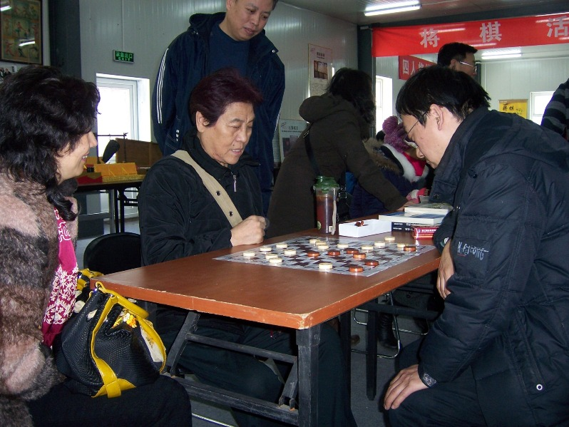

今天在龙潭庙会上，我国第一位打破世界纪录的女运动员，我国第一位打破田径世界纪录的运动员，1936年以来亚洲第一位打破田径世界纪录的运动员郑凤荣虚心向张铁良老师请教国际跳棋。

1957年11月17日的北京田径比赛中，郑凤荣成功地跳过了1.77米，打破了由美国运动员M・麦克丹尼尔保持的1.76米的世界纪录。她成为我国第一位打破世界纪录的女运动员，也是我国第一位打破田径世界纪录的运动员，是1936年以来亚洲第一位打破田径世界纪录的运动员。
美联社当时惊呼：“一位20岁的中国姑娘在北京以有力的一跳警告世界田径界，六亿中国人不会永远是落后选手了。”国内评论称她是“宣布中国体育运动春天降临的一只燕子”。1965年周 总理向她亲授体育运动荣誉奖章。她曾多次打破女子三项及五项全能的全国纪录。她的跳高技术非常全面扎实，从助跑到起跳，技术衔接的好，过杆技术也很突出。她采用的是剪式跳高技术。跳高最好成绩是1.78米，是1963年创造的。1956年获运动健将称号，1959年获国家体委颁发的体育运动荣誉证章。1979年起任中国田协副主席。1964年当选为第三届全国人民代表大会的代表。1978年、1983年任第五届、第六届全国政协委员。英国《吉尼斯田径全书》对郑凤荣有所介绍，并刊登她的照片。1984年她被评选为我国建国35年来优秀运动员之一。曾任中国体育服务公司副总经理。她的一家被称为“跳高之家”。她爱人段其炎曾获1959年第一届全运会男子跳高冠军（成绩1.97米），现任北京队教练。女儿亦曾是一位跳高运动员。1987年10月获国际田联颁发的“国际田联75周年金质纪念章”。1988年任中华全国体育总局副秘书长。
［此帖子已被 励精 在 2010-2-17 22:46:01 编辑过］
 哥哥咋没拍张我师傅宫牧洲的照片?
哥哥咋没拍张我师傅宫牧洲的照片? 想师傅了。。。。。
想师傅了。。。。。